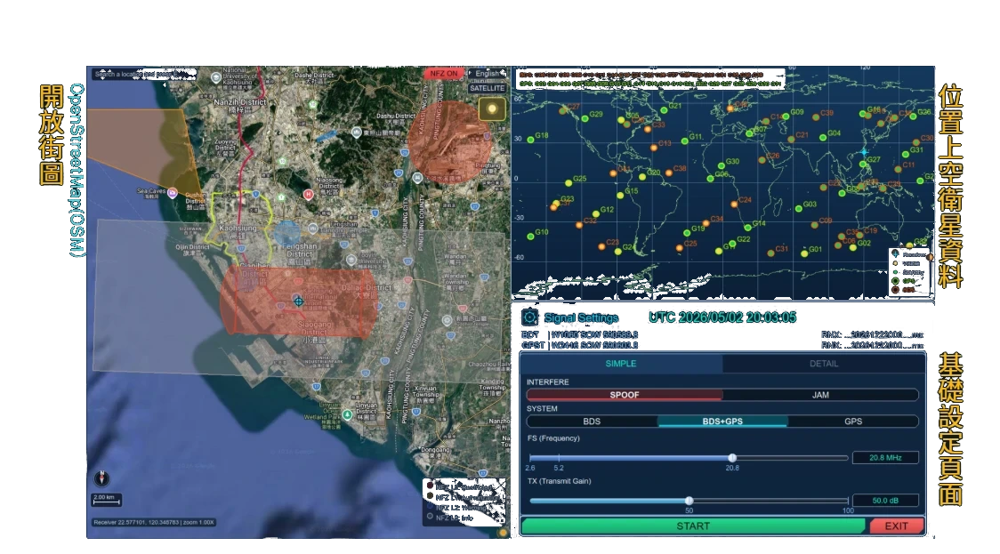

1計算
筆電算出整片天空
依真實廣播星曆，算出每顆 GPS 與北斗衛星此刻該送出的訊號。
GEOTRUST · 國立高雄科技大學 F459 實驗室
一台筆電、一台 SDR，在實驗室裡重現 GPS 與北斗衛星訊號。
GPS 北斗 MEO 北斗 IGSO2026-11-10 廣播星曆 · NKUST 此刻仰角 12° 以上地圖 Natural Earth
SCROLL ↓
01無所不在
三顆以上衛星的距離交會，就是你的位置。
手機・車輛・無人機
各地設備收同一個衛星時間，時鐘就對齊了。
電網・基地台・金融交易
02很脆弱
1正常
真訊號，定位在高雄
2被蓋過
訊號被淹沒，找不到位置
3被假冒
人在高雄，手機說你在巴黎
03造一片天空
要測得準，訊號必須可以控制、可以重現。GeoTrust 只要兩步。

1計算
依真實廣播星曆，算出每顆 GPS 與北斗衛星此刻該送出的訊號。

2送出
筆電算好的數位訊號，經 SDR 轉成真的無線電訊號送出。
同一片天空，可以重播無數次
給它干擾和假訊號，看它會不會被帶走。
同一組訊號反覆重播，測每一個新版本。
條件完全相同，不同接收機才比得出高下。
學生在實驗室裡，親手操作衛星訊號。
04真實的天空
依真實廣播星曆計算的 GPS 與北斗衛星。拖曳旋轉，點一下地球後可縮放。
點擊地圖任一處，即可改選觀測點位，可見衛星與天空圖會即時重算。縮小到底回到地球視角。
05接著看